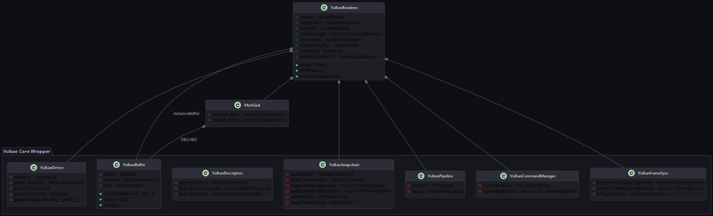

This document details the graphics architecture of the Vulkan Renderer. The renderer is designed to abstract raw Vulkan API complexity into clean, RAII C++ wrapper classes while preserving performance, supporting instanced drawing, and utilizing modern techniques like Push Constants.

Vulkan Layer
Vulkan Abstraction Layer
Vulkan requires explicit declaration of resources, layouts, synchronization, and hardware access. The engine implements a set of object-oriented C++ classes under engine/src/core/ to safely encapsulate Vulkan handles:
- VulkanContext: Stores instance-wide structures, validation layer callbacks, and physical device enumerations.
- VulkanDevice: Handles hardware physical devices selection (prioritizing discrete GPUs) and logical device creation. Configures queue families for graphics, presentation, and transfers.
- VulkanSwapchain: Manages screen resolution changes, double/triple buffering image chains, render pass configurations, swapchain image views, and framebuffers.
- VulkanPipeline: Coordinates shader layout state bindings, viewport/scissor setup, depth/stencil tests, color blending, rasterization, and multi-sampling configurations.
- VulkanBuffer: Encapsulates VkBuffer allocation and VkDeviceMemory binding. Supports staging allocations, GPU-local transfer operations, and persistent host mapping.
- VulkanDescriptors: Standardizes descriptor layouts, bindings, pools, and set allocations for camera matrices and global uniforms.
- VulkanCommandManager: Creates command pools and records frame buffer command sequences. Supports one-time command buffer execution for staging buffers uploads.
- VulkanFrameSync: Holds CPU-GPU synchronization elements, preventing race conditions via fences and swapchain image-acquisition semaphores.
Double-Buffered Frame Synchronization
To prevent the CPU from submitting draw commands faster than the GPU can process them (which would lead to visual artifacts or memory exhaust), the engine coordinates double-buffering using VulkanFrameSync.hpp:
};
Manages Vulkan semaphores and fences to synchronize frames in flight.
Definition VulkanFrameSync.hpp:10
std::vector< VkFence > inFlightFences
Fences waiting for queue work execution completion.
Definition VulkanFrameSync.hpp:79
std::vector< VkSemaphore > renderFinishedSemaphores
Semaphores waiting for render passes to complete.
Definition VulkanFrameSync.hpp:77
std::vector< VkSemaphore > imageAvailableSemaphores
Semaphores waiting for image availability.
Definition VulkanFrameSync.hpp:75
The Render Loop Sync Protocol
- Wait for Frame Fence: Before starting a new frame, the CPU waits on the inFlightFence of the current frame index (vkWaitForFences). This guarantees the GPU is finished executing the command buffer we're about to record into.
- Acquire Next Image: Request the next image from the swapchain using vkAcquireNextImageKHR, passing the imageAvailableSemaphore.
- Reset Fence: Reset the fence (vkResetFences) to lock the current frame buffer slot.
- Submit Command Buffer: Submit the recorded commands to the graphics queue (vkQueueSubmit).
- Wait Stage: Configured to wait on the imageAvailableSemaphore at the VK_PIPELINE_STAGE_COLOR_ATTACHMENT_OUTPUT_BIT stage.
- Signal Stage: Signals the renderFinishedSemaphore when drawing is completed.
- Fence Trigger: Passes the inFlightFence to automatically trigger when the GPU has finished execution.
- Present Image: Request presentation (vkQueuePresentKHR), waiting on the renderFinishedSemaphore to ensure rendering has finished.
Trade-Off: Double vs Triple Buffering
- Double Buffering (Engine Choice): Limits active frames in flight to 2. This keeps input latency low (the time between user input and screen update is at most 2 frames) and reduces VRAM allocation for swapchain buffers.
- Triple Buffering: Allows a 3rd frame to start processing on the CPU while the GPU draws the 2nd and displays the 1st. While this hides framerate micro-stutters, it introduces an extra frame of input lag and requires additional buffer allocation memory pools.
Resource Lifetimes & RAII Destruction Sequence
Vulkan has strict rules regarding object lifetimes: objects cannot be destroyed while the GPU is still executing commands that reference them. Additionally, Vulkan handles must be destroyed in the reverse order of their creation.
Our RAII wrappers coordinates resource disposal via an explicit cleanup sequence inside VulkanRenderer::cleanup():
- GPU Wait: Wait for the GPU to complete all running queue operations using vkDeviceWaitIdle(device).
- Editor UI Disposal: Call ImGui_ImplVulkan_Shutdown() and ImGui_ImplGlfw_Shutdown() to clean up GUI font allocations and render states.
- Pipeline Cleanup: Destroy pipelines (VkPipeline) and layouts (VkPipelineLayout).
- Descriptor Sets: Clear pools (VkDescriptorPool) and set layouts (VkDescriptorSetLayout).
- Framebuffers & RenderPass: Destroy framebuffers and the main render pass.
- Swapchain: Destroy the swapchain (VkSwapchainKHR) and its image views.
- Buffer Deallocation: Free vertex, index, and instancing dynamic buffers (vkDestroyBuffer and vkFreeMemory).
- Sync Primitives: Destroy fences and semaphores (vkDestroyFence, vkDestroySemaphore).
- Logical Device & Instance: Destroy the logical VkDevice handle, and finally the VkInstance instance.
Shader & Graphics Pipeline Compilation
Shaders are written in GLSL and compiled to binary SPIR-V bytecode. The build process uses the glslc compiler to build:
- unlit.vert / unlit.frag -> unlit.vert.spv / unlit.frag.spv (handles textured and colored mesh drawing)
- grid.vert / grid.frag -> grid.vert.spv / grid.frag.spv (handles infinite grid rendering)
The PipelineBuilder dynamically builds the graphics pipelines. It links vertex input layouts, rasterization configurations (cull modes, polygon drawing modes), color blending, and shader modules into a single VkPipeline state.
Depth Buffering & Depth Clears
To ensure objects render correctly in 3D depth order:
- Swapchain Depth Buffer: The VulkanSwapchain queries the GPU to find a supported depth format (e.g., VK_FORMAT_D32_SFLOAT). It allocates a GPU-local VkImage, assigns a VkDeviceMemory allocation, and creates a VkImageView.
- RenderPass Attachment: The main rendering pass is configured with 2 attachments: Color (index 0) and Depth/Stencil (index 1). The subpass is configured to perform depth write and read tests.
- Pipeline Depth Test: The pipeline assembly enables VkPipelineDepthStencilStateCreateInfo with depthTestEnable = VK_TRUE and depthWriteEnable = VK_TRUE.
- Depth Clears: During RenderSystem::drawFrame, the command recorder specifies 2 clear values: color clear value (e.g. dark grey) and depth clear value (1.0f representing maximum distance depth).
Descriptor Set Layouts (Camera & Textures)
The engine binds graphics pipeline properties using two separate descriptor sets:
- Descriptor Set 0 (Global Uniforms): Binds the global Camera Uniform Buffer (containing View and Projection matrices) to binding 0. Bound once per frame.
- Descriptor Set 1 (Material Textures): Binds the texture's VkImageView and VkSampler to binding 0. Bound per material batch. A fallback 1x1 white texture descriptor is bound automatically if the entity's material doesn't specify a texture path.
Instanced Drawing & Push Constants
For maximum performance, the renderer avoids calling vkCmdDraw for every individual entity. Instead, it groups draw calls by Mesh + Material combination inside RenderSystem.hpp.
Per-Instance Data via Push Constants
Rather than storing model matrices in costly dynamic uniform buffers, the engine utilizes Push Constants. Push Constants reside in high-speed registers on the GPU, allowing instant access with zero memory overhead.
The push constant structure is defined as:
};
Struct for passing constant data directly via Vulkan push constants to shaders.
Definition pushconstants.hpp:10
glm::mat4 model
Model matrix of the object being rendered.
Definition pushconstants.hpp:12
glm::vec4 color
Base color multiplier.
Definition pushconstants.hpp:14
The Batch Drawing Loop
- Group Entities: The RenderSystem aggregates active entities into batches of identical Mesh* and Material* keys.
- Bind Pipeline & Descriptors: Binds the material's pipeline and descriptor sets (which contain camera projection-view uniform buffer data).
- Bind Vertex/Index Buffers: Binds the mesh vertex buffer (VBO) and index buffer (IBO) once.
- Draw Instances: Iterates through the batch. For each instance:
- Fills the PushConstants struct with the instance's model matrix and color.
- Pushes data using vkCmdPushConstants.
- Calls vkCmdDrawIndexed with an instance count of 1.
By using push constants and batching vertex/index buffer bindings, the engine reduces CPU driver overhead and minimizes state changes.
Infinite Grid Rendering
The engine implements a beautiful infinite grid component. It is drawn dynamically inside drawGrids() without requiring a complex vertex buffer:
- Binds the grid pipeline.
- Passes grid parameters (camera position, grid color, spacing, fade size) via a specialized grid push constant block.
- Calls vkCmdDraw(cmd, 6, 1, 0, 0) with 6 vertices.
- The grid.vert shader generates a screen-aligned quad on the fly. The grid.frag shader calculates grid lines in world space and applies a fading effect based on distance from the camera position, creating a smooth grid backdrop.
 1.17.0
1.17.0